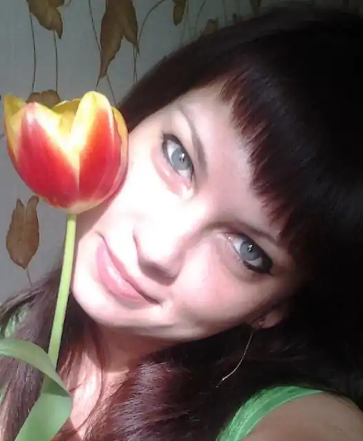

Олена Володимирівна Федіна, літературний псевдонім Олена Ляшенко, народилася 8 березня 1988 року, мешкає у місті Кам'янське Дніпропетровської області. Пише поетичні та прозові твори для дітей та дорослих. Останнім часом, з народженням маленького натхненника, переважає дитяча тематика, зокрема, байки для дошкільнят та дітей молодшого шкільного віку. 2017 року Олена відзначає 15 років своєї поетичної діяльності. За цей час брала участь у багатьох відомих конкурсах:
"Продовження до мультфільму" від ЗАО "АВК" (2002),
"Собори наших душ" (2004, 2005), Всеукраїнський конкурс дитячої творчості (2005), "Об'єднаймося ж брати мої" (2005), "Молода муза" (2008), "Vivart" (2007, 2015), "Літературна надія Дніпра" (2016), Є дипломантом (фіналісткою) обласного літературного конкурсу "Vivart-6" у номінації "Поезія" (2017), фіналісткою Міжнародного конкурсу "Корнійчуковська премія" (2017) та інших. Дійсний член молодіжного клубу "Vivart". Учасниця обласної акції "Голодомор без права забуття" (2008). Співавтор літературних збірок "Собори наших душ" (2004, 2005), "Молода муза Придніпров'я" (2008), "Ліра Прометея" (2010), "Чатує в століттях Чернеча гора" (2015), "На кордоні любові" (2016), "Vivart-6" (2017) а також українських та зарубіжних наукових видань. Автор дитячої книги "А сьогодні на ставочку" (2017).